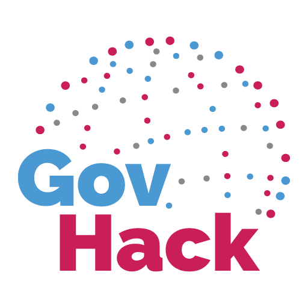
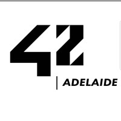

Work

Technical Consultant
August 2025 – Present
Adelaide, SA
- Researched Computer vision model for object detection task.
- Developed CI/CD pipeline on Azure DevOps for deployment weight model to Hugging Face Space.
- Collaborated with team and Project manager to refine and improve model performance for publicly demontrated to clients.

AI Engineer
April 2025 – Present
Remote, TH
- Researched and developed latest AI technologies, LLM models to find feasibility of new product development.
- Developed AI chatbot services using FastAPI and LangGraph to orchestrate multi agentic workflow.
- Trained LLM and NER models using AWS SageMaker AI services to be used in different features.
- Communicated with BA and Dev team to understand business requirements and implement solutions.
Volunteer and Extracurriculars

Participant
August 2025
Adelaide, SA
- Participated in the GovHack 2025 competition, where we developed a solution to for people to access government services and information. using chatbot, base on n8n platform, and open source AI model.
BI Developer
April 2025
Adelaide, SA
- Developed interactive Power BI reports to visualise GDP per capita, population, unemployment, CPI, and government net debt, publicly open for everyone to see the government's performance and year-over-year trends.

Participant
February 2025
Adelaide, SA
- Participated in the 42 Adelaide 28 day intensive bootcamp, where we learned about the basics of programming, and how to use the command line, bacic git command and develop software in team based project.